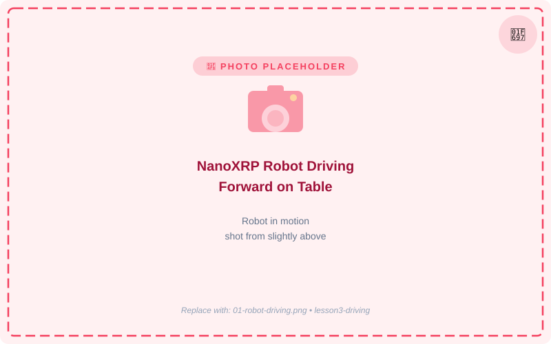
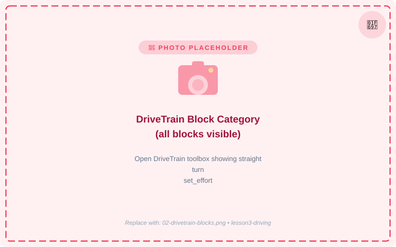
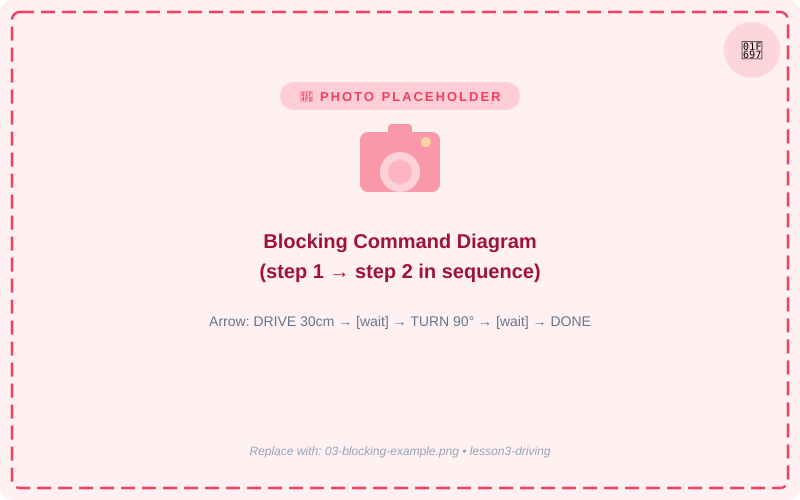
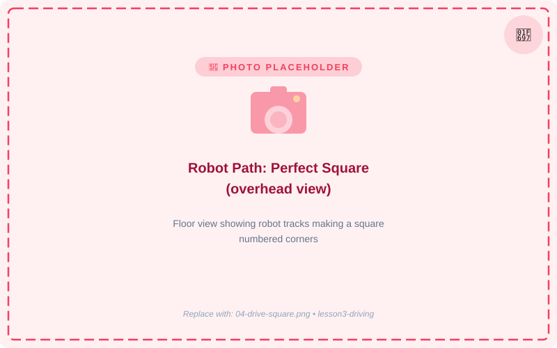
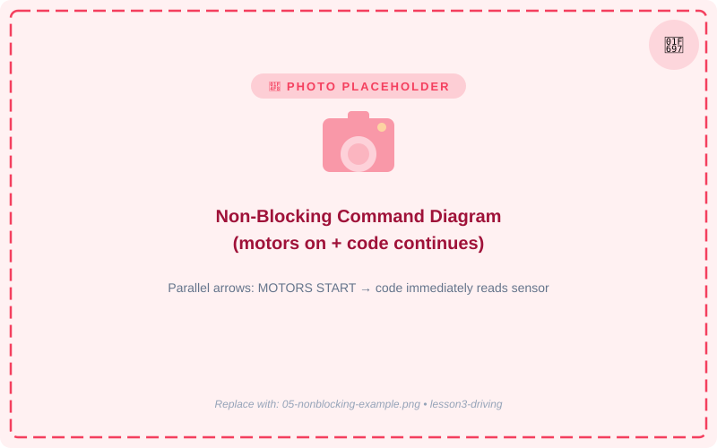
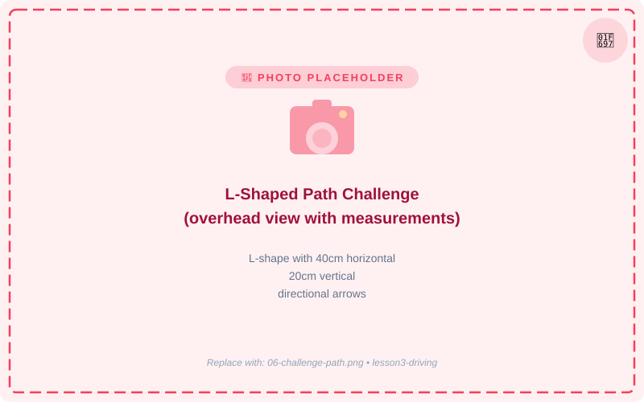

🚗 Lección 3: Haciendo que el Robot se Mueva
Aventuras de Programación del Robot NanoXRP
🚗 ¡Vamos a Movernos!
¡Ahora es momento de conducir tu robot! En esta lección, aprenderás el concepto más importante en programación de robots: la diferencia entre comandos bloqueantes y no bloqueantes.

- La categoría de bloques DriveTrain
- Lo que hacen los comandos "bloqueantes"
- Lo que hacen los comandos "no bloqueantes"
- Cuándo usar cada tipo
Entender bloqueante vs. no bloqueante es una de las ideas más importantes en toda la programación — ¡no solo para robots! Descubrámoslo juntos.
🧱 Descripción General de Bloques DriveTrain
Todos los comandos de conducción están en la categoría DriveTrain (los bloques de color naranja oxidado). Esto es lo que hace cada uno:

| Nombre del Bloque | Qué hace | Tipo |
|---|---|---|
| straight(dist, effort) | Conducir hacia adelante o hacia atrás una distancia establecida | BLOQUEANTE |
| turn(degrees, effort) | Rotar a la izquierda o derecha un número específico de grados | BLOQUEANTE |
| set_effort(left, right) | Establecer la potencia del motor inmediatamente (-1 a 1) | NO BLOQUEANTE |
| set_speed(left, right) | Establecer la velocidad del motor en RPM | NO BLOQUEANTE |
| stop() | Detener ambos motores inmediatamente | NO BLOQUEANTE |
⏸️ ¿Qué es un Comando BLOQUEANTE?
Un comando bloqueante hace que el programa se pause y espere hasta que el comando se complete completamente antes de pasar a la siguiente línea.
Cuando presionas el botón para cruzar, esperas en la acera hasta que el semáforo se pone verde. Aún no cruzas — estás "bloqueado" hasta que se complete. ¡Eso es exactamente lo que hace un comando bloqueante!

Los dos comandos de conducción bloqueantes son:
straight(distance, effort)
Conduce el robot exactamente esa distancia y se detiene. El programa espera hasta que el robot ha viajado toda esa distancia antes de ejecutar el siguiente bloque.
distance = centímetros (20 = 20 cm hacia adelante, -20 = hacia atrás)
effort = potencia del motor (0.0 a 1.0 — ¡intenta 0.5 para comenzar!)
turn(degrees, effort)
Gira el robot exactamente esa cantidad de grados y se detiene. 90 grados = un cuarto de giro. 180 grados = medio giro (giro en U).
degrees = positivo = girar a la derecha, negativo = girar a la izquierda
📐 Comandos Bloqueantes en Acción
Vamos a usar comandos bloqueantes para conducir el robot en un ¡cuadrado!

Aquí está el programa Blockly. El robot conduce hacia adelante 30 cm, gira a la derecha 90° y se repite cuatro veces:
Porque straight() y turn() son bloqueantes, el robot termina de conducir 30 cm completamente antes de girar. Si no fueran bloqueantes, el robot intentaría conducir y girar al mismo tiempo — ¡un caos total!
Construye este programa en Blockly y ejecútalo en tu robot. ¿Forma un cuadrado? Intenta cambiar 30 por 20 o el esfuerzo por 0.7.
▶️ ¿Qué es un Comando NO BLOQUEANTE?
Un comando no bloqueante inicia la acción e inmediatamente pasa a la siguiente línea de código — ¡no espera!
Presionas Iniciar y luego te vas a hacer otra cosa. ¡El microondas está funcionando, pero ya estás haciendo lo siguiente! Eso es no bloqueante.

Comandos de conducción no bloqueantes:
set_effort(left, right)
Establece ambos motores a un nivel de potencia de -1.0 a 1.0. Positivo = hacia adelante, negativo = hacia atrás. ¡Los motores siguen girando hasta que les digas que se detengan!
set_effort(0.5, 0.5) = ambos motores al 50% hacia adelante
set_effort(-0.5, -0.5) = ambos motores al 50% hacia atrás
set_effort(0.5, -0.5) = girar en el lugar (izquierda hacia adelante, derecha hacia atrás)
stop()
Detiene ambos motores ahora mismo. Úsalo después de set_effort() para detener el robot en el momento correcto.
⚡ No Bloqueante en Acción
Los comandos no bloqueantes se usan cuando tú decides cuándo detener — a menudo con una lectura de sensor o un temporizador.
Ejemplo: Conducir durante 2 segundos y luego detener
set_effort(0.5, 0.5)inicia ambos motores — el código se mueve inmediatamente al siguiente bloquewait(2)pausa el código durante 2 segundos (¡pero los motores siguen funcionando!)stop()apaga ambos motores
Ejemplo: Conducir y verificar sensor al mismo tiempo
El robot conduce hacia adelante y sigue verificando el sensor sónar. ¡Tan pronto como algo está dentro de 20 cm, se detiene!
🤔 Cuándo Usar Cada Tipo
Elegir el tipo correcto de comando es como elegir la herramienta correcta para el trabajo. Aquí hay una guía:
✅ Usa BLOQUEANTE cuando...
- Quieras conducir una distancia exacta
- Quieras girar un número exacto de grados
- Los pasos deben suceder uno a la vez en orden
- Ejemplo: conducir en un cuadrado, navegación de laberinto
✅ Usa NO BLOQUEANTE cuando...
- Quieras que el robot conduzca mientras verifica un sensor
- Quieras controlar la velocidad gradualmente
- Estés usando un gamepad (control continuo)
- Ejemplo: parar en la pared, seguimiento de línea, control de gamepad
Si olvidas llamar a stop() después de set_effort(), el robot seguirá adelante para siempre hasta que las baterías se agoten o choque. ¡Siempre recuerda detener!
🎯 Desafío: Conducir una Forma de L
Usa comandos bloqueantes para hacer que tu robot conduzca una ruta en forma de L. Aquí está la ruta:

La ruta:
- Conducir hacia adelante 40 cm
- Girar a la izquierda 90 grados (usa -90)
- Conducir hacia adelante 20 cm
Si el robot no gira exactamente 90°, intenta ajustar el esfuerzo. Un esfuerzo más bajo (como 0.3) proporciona giros más precisos.
🔁 Desafío No Bloqueante
Ahora intenta un desafío no bloqueante: ¡haz que el robot avance, aumente gradualmente la velocidad y luego se detenga!
Aumentar velocidad gradualmente:
¡No puedes hacer esto con comandos bloqueantes! Solo no bloqueante te permite cambiar la velocidad durante la ejecución.

📝 Resumen
¡Revisemos lo que aprendiste sobre hacer que el robot se mueva!
⏸️ BLOQUEANTE
straight(dist, effort)
Conducir distancia exacta, esperar hasta que termine.
turn(deg, effort)
Girar grados exactos, esperar hasta que termine.
Mejor para: rutas paso a paso
▶️ NO BLOQUEANTE
set_effort(L, R)
Establecer potencia del motor, seguir adelante.
stop()
Detener motores ahora mismo.
Mejor para: parada basada en sensor, control gradual
Entender esta diferencia te pone por delante de muchos programadores principiantes. ¡Ahora toma el cuestionario para terminar esta lección!
¡Verificación Rápida!
¡Necesitas 4 de 5 correctas para pasar!
1. ¿Qué hace un comando BLOQUEANTE?
2. ¿Qué comando usarías para conducir el robot EXACTAMENTE 30 cm hacia adelante?
3. Quieres conducir el robot hacia adelante mientras verificas un sensor. ¿Con qué tipo de comando deberías comenzar?
4. ¿Qué sucede si usas set_effort() pero olvidas llamar a stop()?
5. Para hacer que un robot conduzca en un cuadrado perfecto, ¿qué tipo de comandos deberías usar?